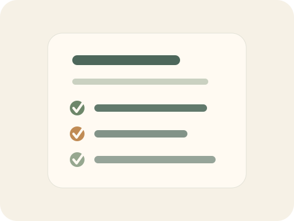
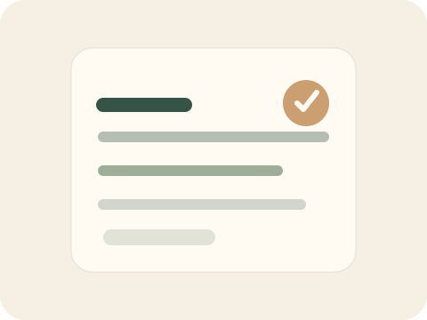
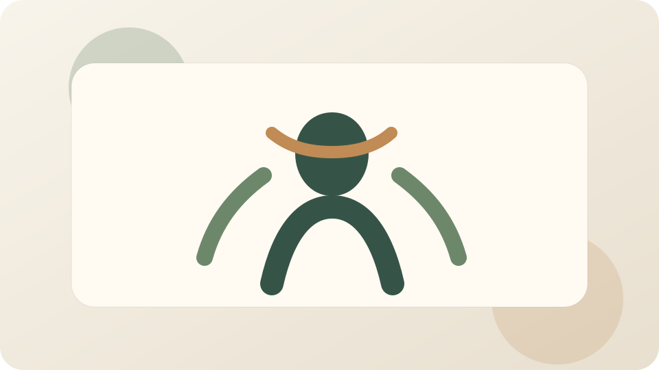
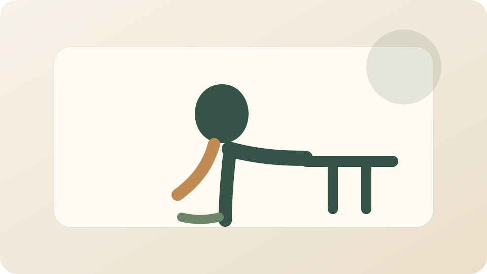

Статьи
3
Короткие объяснения без перегруза
Публичный гид
Спокойная библиотека о малых шагах, устойчивом ритме и телесной поддержке
Сайт собирает в одном месте короткие статьи о повседневной дисциплине, PDF-шпаргалки для самостоятельной работы и раздел упражнений с локальными видеофайлами. Контент подается как образовательный ресурс: без подписок, без личного кабинета и без лишнего шума.
Статьи
3
Короткие объяснения без перегруза
3
Легкие материалы для скачивания
Видео
3
Локальные файлы, совместимые с GitHub Pages
Навигация
Сначала можно пройти базовые статьи о системе привычек, затем скачать вспомогательные PDF и перейти к спокойным упражнениям для поддержки тела.
Привычки
Раздел помогает выстроить старт, удерживать ритм и уменьшать трение через среду, а не через самодавление.
Открыть разделШпаргалки и формы для практики можно скачать напрямую без регистрации и лишних переходов.
Перейти к файламУпражнения
Каждое упражнение сопровождается локальным видеофайлом, структурой шагов и предупреждениями по безопасности.
Смотреть упражненияИзбранное
На старте достаточно выбрать один материал про привычки, один PDF и одно упражнение. Этого хватит, чтобы получить рабочую первую неделю практики.
Привычка держится не на мотивации, а на том, насколько ясно вы видите следующий шаг в конкретный момент дня.
Открыть материалСтабильность появляется там, где старт привычки настолько мал, что его трудно отложить даже в загруженный день.
Открыть материал
Одна страница для старта: сигнал, минимальный шаг, маркер выполнения и короткая вечерняя заметка.
Подходит для первой привычки

Короткая форма для спокойной ретроспективы: что держало ритм, где появились пробелы и что протестировать дальше.
Для поддержания уже начатой системы

Короткая последовательность для шеи, плеч и грудного отдела, которая помогает мягко включиться в день.
Фокус: Шея, плечи, грудной отдел
Смотреть разбор
Набор мягких движений для перерыва между рабочими блоками: раскрытие передней линии тела и включение ног.
Фокус: Таз, передняя линия тела, ноги
Смотреть разборGitHub Pages
Первая версия намеренно сделана легкой: контент хранится в файлах, ссылки остаются относительными, а медиатека собрана компактно, чтобы сайт спокойно публиковался как project site на GitHub Pages.